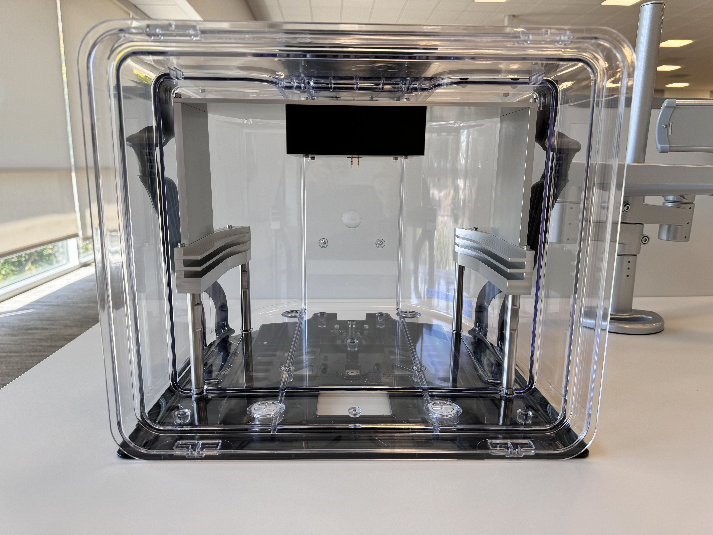
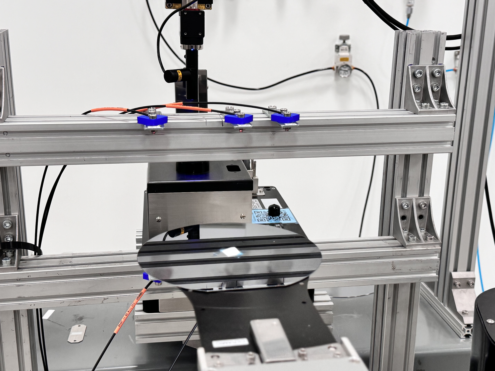

About Me
Your Name - Mechatronics Engineer with expertise in robotics, electrical design, and firmware development.



Vorta Particle Abatement System
Purpose
- A system designed to effectively remove particles from semiconductor EFEMs and wafer-handling equipment.
Description
- Utilizes a specialized Mobile Electrostatic Carrier (MESC) that fits within a standard FOUP.
- The MESC is charged to a high voltage using pogo pins.
- Transported to different stations in the EFEM, where stored voltage attracts and captures airborne particles.
Benefits
- Enhances semiconductor equipment cleanliness, improving yield.
- Integrates into a standard FOUP, ensuring broad compatibility with EFEMs.
- Eliminates manual cleaning processes, reducing cost and complexity, particularly in vacuum environments.
My Contribution
- Lead engineer responsible for testing, analyzing results, and iterative improvements.
- Initially designed by an external consulting team, but I have taken full ownership of PCB revisions and reworks.
- Refined the system for enhanced performance and reliability.


Auto Wafer Centering
Purpose
- System to detect positioning of wafers on end effector using throughbeam sensors.
Description
- Based on timing of sensor triggers, the center position of the wafer can be calculated.
- Basic implementation was already implemented. However, when a sensor hit a wafer's notch or flat feature, significant error was introduced.
Benefits
- Implemented third sensor and Nelder-Mead optimization algorithm to account for variation in test conditions.
- Created geometric and discrete simulations in Python to find best position for each sensor, and to analyze effects of sensor latency and robot vibration.
My Contribution
- Improved overall correction accuracy from around 0.2mm to 0.1mm.
- Enabled center correction of wafers with flat features, transparent materials, and different sizes.
Autotuning
Purpose
- To design a program to automate portions of robot motion tuning.
Description
- Engineers manually tune motor parameters to optimize robot performance -- maintaining fast throughput while reducing vibration and acceleration experienced by the payload.
- Current process is time-consuming and repetitive.
Benefits
- Created Python program to automate tuning of motor current and throughput by changing motor acceleration and deceleration values.
- Implemented inverse Vandermonde Matrix algorithm to predict value of measured variables given a pair of accel and decel values.
- Algorithm could easily be expanded to include any number of measured variables, allowing future expansion of program.
My Contribution
- Implemented optimization algorithm, data handling.
- Assisted with communication to robot and simulator utility.
Electrostatic End Effector
Purpose
Description
Benefits
My Contribution

Plunger Jig
Purpose
- To design a program to automate portions of robot motion tuning.
Description
- Engineers manually tune motor parameters to optimize robot performance -- maintaining fast throughput while reducing vibration and acceleration experienced by the payload.
- Current process is time-consuming and repetitive.
Benefits
- Created Python program to automate tuning of motor current and throughput by changing motor acceleration and deceleration values.
- Implemented inverse Vandermonde Matrix algorithm to predict value of measured variables given a pair of accel and decel values.
- Algorithm could easily be expanded to include any number of measured variables, allowing future expansion of program.
My Contribution
- Implemented optimization algorithm, data handling.
- Assisted with communication to robot and simulator utility.


Guitar Pedals
Purpose
- To create custom devices to alter guitar sound.
Description
- Design PCBs using both digital and analog circuits to modify guitar sound.
- Use Digital Signal Processing to convert audio signal to digital.
- Write custom C-based firmware for digital pedals. Can reflash board to change effects.
- Design hardware in CAD.
- Create custom finishes using Adobe Illustrator and UV printing or hand painting.
Resume
Download My Resume